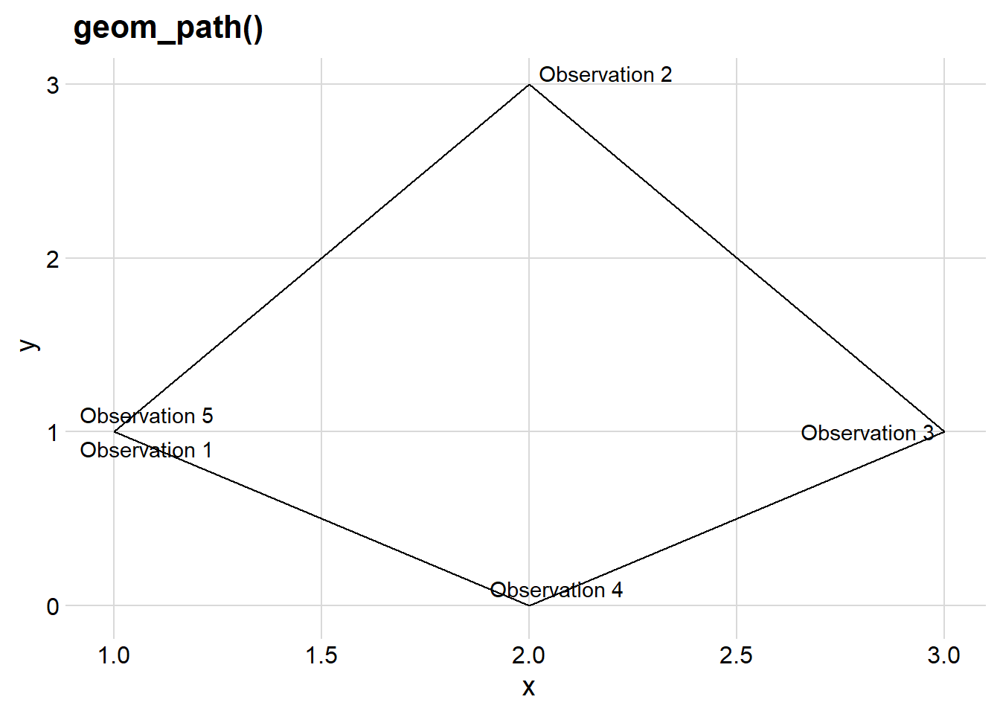
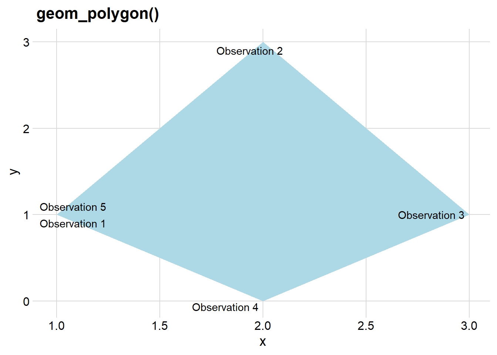
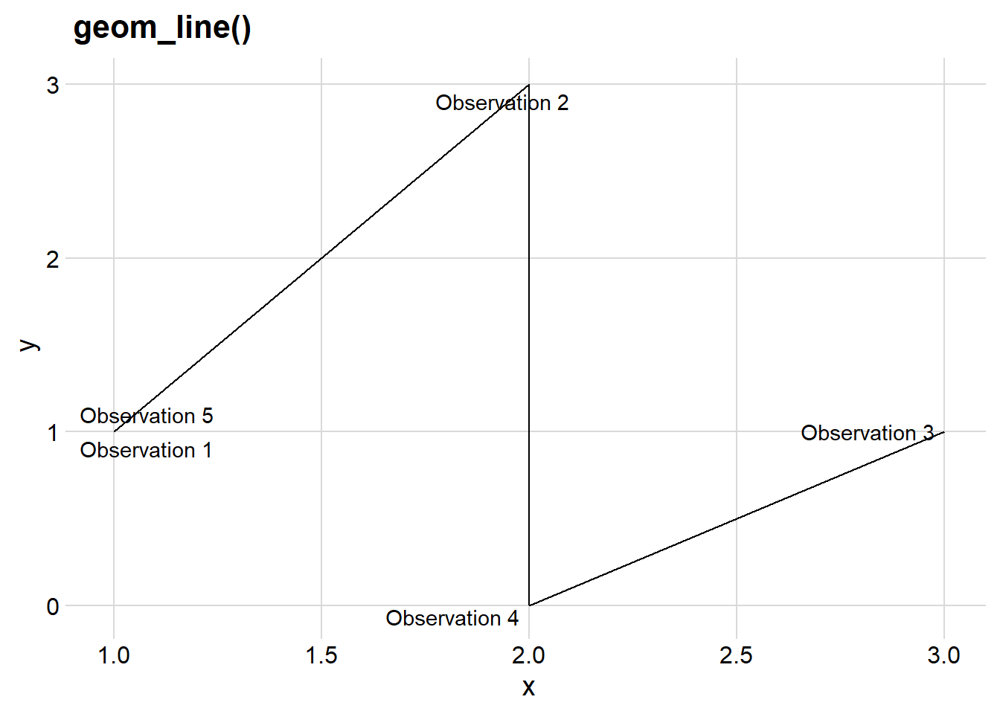

Chapter 3
Individual geoms
3.1.1 Exercises
Question 1
What geoms would you use to draw each of the following named plots?
Here’s a table that shows the geoms you would use in ggplot2 to create each of the named plots, along with example code using the mpg dataset:
| Plot Type | ggplot2 Geom | Example Code |
|---|---|---|
| Scatterplot | geom_point() |
|
| Line chart | geom_line() |
|
| Histogram | geom_histogram() |
|
| Bar chart | geom_bar() |
|
| Pie chart | |
Question 2
What’s the difference between geom_path() and geom_polygon()? What’s the difference between geom_path() and geom_line()?
geom_path() and geom_polygon() are both used for creating line-based plots, but they serve different purposes. geom_line() is another geom used for line-based plots, and I’ll explain the differences between these geoms: —
-
-
geom_path()connects data points in the order they appear in the data frame. It’s used to create a path or line that may not necessarily form a closed shape. -
geom_path()is typically used for visualizing trajectories, paths, or any data where the order of points matters. - In Figure 1 (a) ,
geom_path()connects the points in the order of their row numbers in the data, i.e. (1,1) -> (2,3) -> (3,1) -> (2,0) -> (1,1) in that order.
-
-
-
geom_polygon()is used to create filled shapes by connecting data points in the order they appear. It forms a closed path and fills the area inside. - It’s commonly used for creating filled polygons, like shapes on a map or shaded areas in plots.
- In Figure 1 (b) ,
geom_polygon()connects the points (1,1) -> (2,3) -> (3,1) -> (2,0) -> (1,1) in that order, forming a closed shape, and fills the area inside the shape.
-
-
-
geom_line()is used to create a line chart by connecting data points in the order they appear on the plot axis. It is used to show trends or connections between data points, irrespective of their row number in the data frame from which they came from. - In Figure 1 (c) ,
geom_line()connects the points (1,1) -> (2,3) -> (2,0) -> (3,1) in that order along the increasing values of x-axis variable “x”.
-
Code
library(tidyverse)
library(cowplot)
df <- data.frame(
x = c(1, 2, 3, 2, 1),
y = c(1, 3, 1, 0, 1),
label = paste0("Observation ", 1:5)
)
ggplot(df, aes(x, y, label = label)) +
geom_path() +
ggrepel::geom_text_repel() +
labs(title = "geom_path()") +
theme_minimal_grid()
ggplot(df, aes(x, y, label = label)) +
geom_polygon(fill = "lightblue") +
ggrepel::geom_text_repel() +
labs(title = "geom_polygon()") +
theme_minimal_grid()
ggplot(df, aes(x, y, label = label)) +
geom_line() +
ggrepel::geom_text_repel() +
labs(title = "geom_line()") +
theme_minimal_grid()


To summarize, geom_path() connects points in the order they appear without necessarily forming closed shapes. geom_polygon() connects points in the order they appear and fills the area inside, creating closed shapes. geom_line() is used for creating line charts to represent trends or connections between data points.
Question 3
What low-level geoms are used to draw geom_smooth()? What about geom_boxplot() and geom_violin()?
In ggplot2, the geom_smooth(), geom_boxplot(), and geom_violin() geoms are high-level geoms that are built on top of lower-level geoms to create their respective visual representations. Here are the low-level geoms used to draw each of these high-level geoms:
-
geom_smooth():-
geom_smooth()is used to add a smoothed line to a scatterplot. It’s commonly used for visualizing trends or relationships in data. - Thus, it can be seen as a collection of a very large number of very short lines connecting points calculated by
loess()smoother function. - Hence, the low-level geoms used for creating the smoothed lines is
geom_line().
-
-
geom_boxplot():-
geom_boxplot()is used to create boxplots that display the distribution of data in a visually concise way. - The low-level geom used to draw the
- boxes in a boxplot:
geom_rect() - whiskers in a boxplot:
geom_line() - outliers in a boxplot:
geom_point()
- boxes in a boxplot:
-
-
geom_violin():-
geom_violin()is used to create violin plots that visualize the distribution of data in a way that combines aspects of a box plot and a kernel density plot. - After calculating the exact points which define the boundaries of a violin, the low-level geom used to draw the violin shapes is
geom_polygon().
-